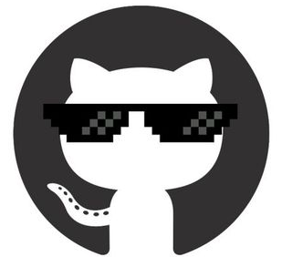

O conteúdo do curso de Desenvolvimento Web da Trybe é alinhado com as skills que o mercado deseja. Devido a isso, já nas primeiras semanas, além de ter aprendido conteúdos técnicos, participei de dinâmicas de grupo e atividades recorrentes em empresas de tecnologia. A metodologia usada me estimula, de formas variadas, a buscar conhecimento em fontes de informação diversas, e assim, de forma ativa, estou constantemente aprendendo a aprender.
Renata Pereira Nunes
Estudante de Desenvolvimento Web na Trybe
Turma 12
Conteúdos abordados:
- Unix & Bash
- Git
- GitHub
- Internet
- HTML
- CSS
- Code Review
- Slack
- Colaboração
- Empatia
- JavaScript
- React
- SQL
- MongoDB
- NodeJS
- Python
- Inteligência Emocional
- Pensamento Crítico
- Inovação
- Liderança
Meu Aprendizado

GitHub
renatapnunes| Hard e Soft Skills | x |
|---|---|
| Conteúdo | Resumo |
| Unix & Bash | Como o Unix funciona; Comandos via terminal usando o Bash; "Tela preta da alegria!" |
| Git | O que é Git; Como funciona; Repositórios e comandos; "Git é maravilhoso!" |
| GitHub | O que é GitHub; Repositórios remotos; Pull Requests; Portfolio; |
| Internet | Como a Internet funciona; Modelo Cliente & Servidor; Protocolos HTTP e HTTPS; Requisições; |
| HTML | Estruturas de página; Tags; HTML Semântico de acordo com o W3CAG; |
| CSS | Regras de estilo com CSS; Box Model; Seletores e Pseudoclasses; Combinações e Classes Descendentes; |
| Code Review | Boas práticas; Validação com Achecker; Revisão na prática; |
| Slack | Criação de Threads; Recursos; Comunicação; |
| Colaboração | Atividades em grupo; Dinâmicas colaborativas; Code Review de exercícios; Comunidade unida e ativa; Grupo de estudos; |
| Empatia | Insentivada e praticada constantemente; |